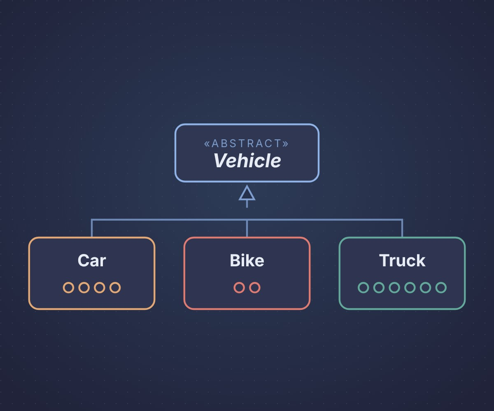
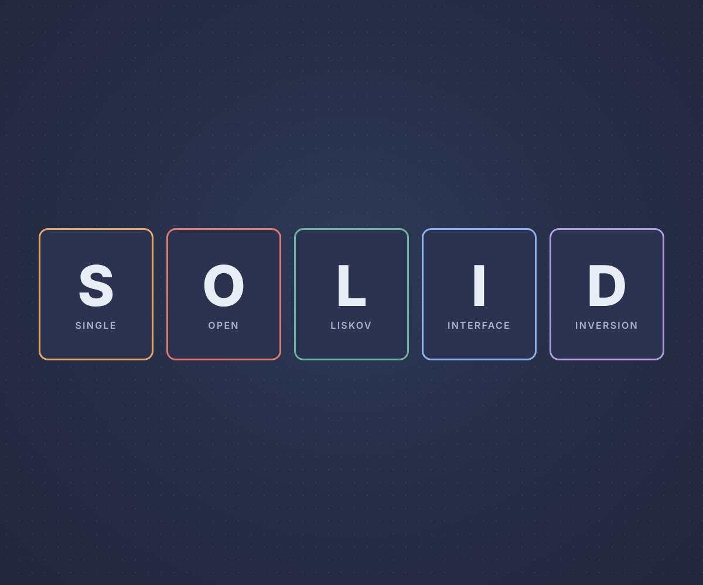
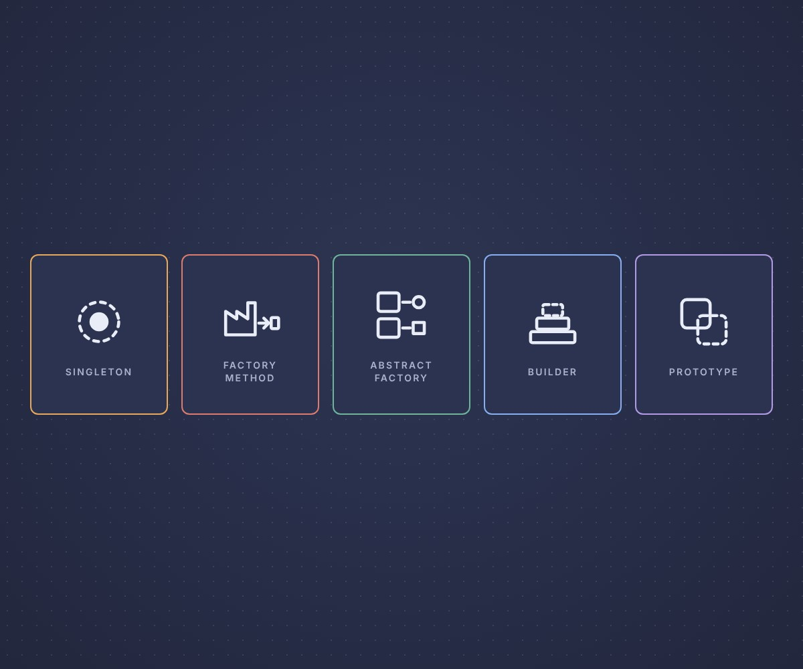
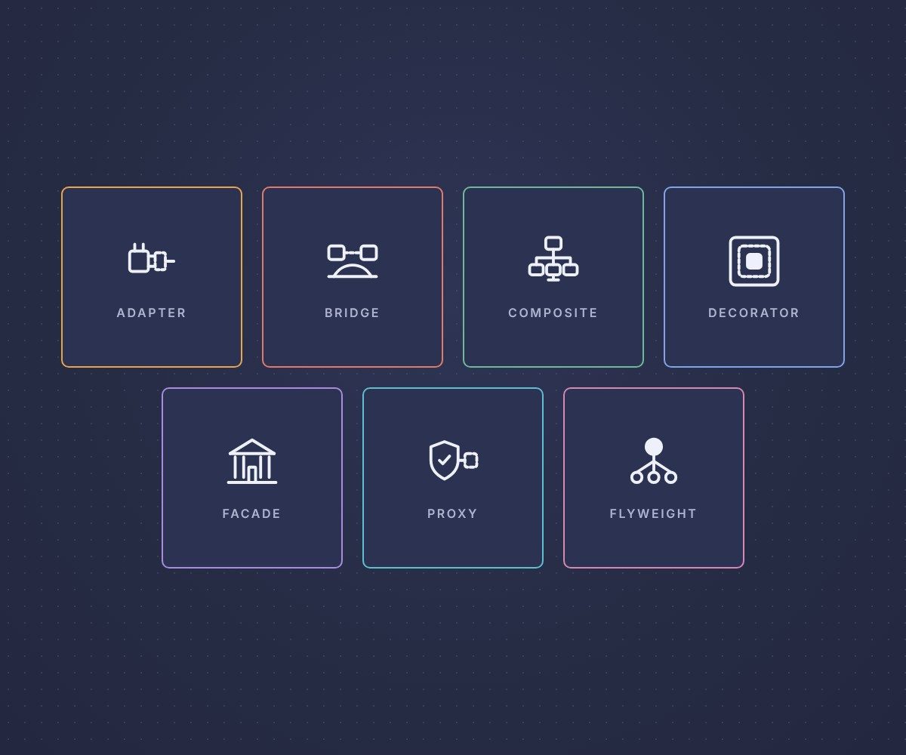
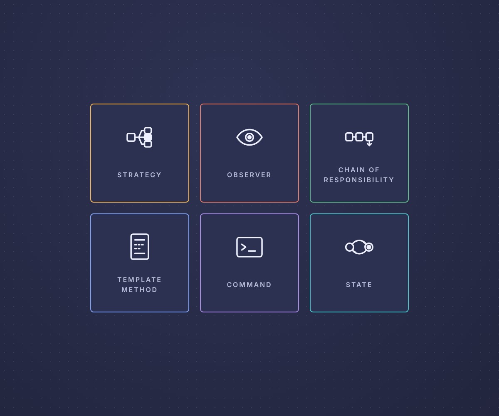

This module builds on the core principles of object-oriented programming to cover the design, development and maintenance of scalable, secure and efficient software. It covers design patterns, software architecture, concurrency, secure coding and clean code, and considers equality, diversity and inclusion, sustainability and entrepreneurship in software design. Weekly practical exercises and case studies from cyber security, data science and AI lead to a capstone project that brings the module’s concepts together in one system.
About this e-portfolio
Each unit page below holds my reflection for that unit, structured using the What? So what? Now what? model, with the artefacts I produced. Code artefacts are Python modules with their tests and a notebook that walks through what they show, all kept in the site’s GitHub repository.

Unit 1: Introduction and Recap of Object-Oriented Programming
This unit revisits inheritance, polymorphism, abstraction and encapsulation, and how classes, objects, constructors, destructors and access control work, and introduces the role of object-oriented programming in large-scale and secure software. It holds my vehicle management class hierarchy in Python, with its tests and a walkthrough notebook.

Unit 2: SOLID Principles of Object-Oriented Design
This unit covers the single responsibility, open/closed, Liskov substitution, interface segregation and dependency inversion principles, and how they keep real systems maintainable and scalable. It holds my refactoring of a poorly designed shopping cart in Python into a SOLID design, with its tests, a walkthrough notebook, reading notes and seminar preparation.

Unit 3: Design Patterns I – Creational Patterns
This unit introduces design patterns and the five creational patterns: Singleton, Factory Method, Builder, Prototype and Abstract Factory, and how they are used in real systems. It holds my car manufacturing system built with the Factory Method pattern in Python, with its tests, a walkthrough notebook, the 300-word report and reading notes.

Unit 4: Design Patterns II – Structural Patterns
This unit covers the seven structural patterns: Adapter, Bridge, Composite, Decorator, Facade, Proxy and Flyweight, and how they make code modular and flexible, with a case study of their use in network security. It holds my coffee shop built with the Decorator pattern in Python, with its tests and a walkthrough notebook, my collaborative discussion post and code for the Adapter, Bridge and Composite patterns, my seminar preparation and reading notes.

Unit 5: Design Patterns III – Behavioural Patterns
This unit covers six behavioural patterns: Strategy, Observer, Chain of Responsibility, Template Method, Command and State, and how they organise the way objects interact and communicate, with a case study of the Observer pattern in cybersecurity systems. It holds my password store built with the Strategy pattern in Python, with its tests and a walkthrough notebook, my Collaborative Discussion 2 post and code refactoring a payment processor with Strategy, a small Observer-based login monitor, my seminar preparation and reading notes.